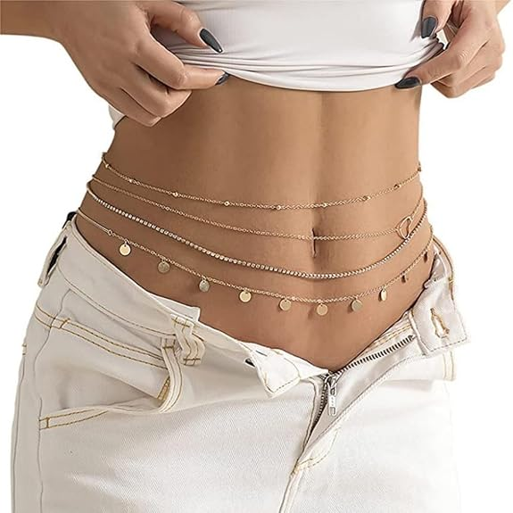

Why Layered Waist Chains Are Trending in 2026
# Layered Chain Waist Jewelry: The Trend That Elevates Every Outfit Fashion is all about the details, and one accessory making a major comeback is the layered chain waist piece. From street-style icons to luxury fashion runways, layered waist chains have become the ultimate statement accessory for adding elegance, edge, and personality to any look.
## Why Layered Chain Waists Are Trending Layered waist chains effortlessly blend sophistication with modern fashion. Unlike traditional belts, these delicate chains drape beautifully around the waist, creating a flattering silhouette while adding a touch of glamour. Whether worn over a bodycon dress, paired with high-waisted jeans, or styled with a bikini on vacation, they instantly transform an outfit from simple to stunning.
## How to Style a Layered Chain Waist ### 1. Over Dresses A layered chain waist can define your waistline and add visual interest to minimalist dresses. Gold chains pair beautifully with neutral tones, while silver chains complement darker outfits. ### 2. With Denim Elevate your everyday jeans and crop top combination by adding a layered waist chain. The metallic shine creates a fashionable contrast against casual denim. ### 3. Beach and Resort Wear Waist chains have long been a staple in beach fashion. Layered designs bring a luxurious touch to swimwear, cover-ups, and vacation outfits. ### 4. Festival and Party Looks For music festivals, concerts, or nights out, layered chain waists add sparkle and movement. Pair them with matching jewelry for a coordinated, eye-catching look.
## Fashion Tips * Keep other accessories minimal when wearing a bold layered waist chain. * Match metal tones with your earrings, necklaces, or bracelets for a polished look. * Experiment with layering different chain styles for a unique and personalized appearance.
The layered chain waist is more than just an accessory—it's a fashion statement that enhances confidence and style. Whether you're dressing up for a special occasion or adding flair to your everyday wardrobe, this versatile trend offers endless styling possibilities. If you're looking for an effortless way to elevate your outfits, a layered chain waist deserves a place in your jewelry collection.